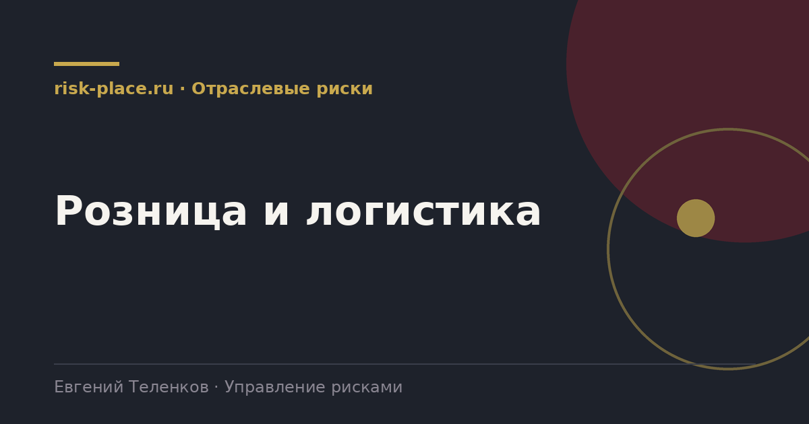

Главная · Библиотека · Отраслевые риски · Розница и логистика
Библиотека · Отраслевые риски
Отрасль, где риск редко бывает крупным, но зато возникает одновременно в сотнях точек.

| Группа | Содержание |
|---|---|
| Товарные потери | Кражи покупателями и персоналом, порча, истечение сроков, ошибки учета |
| Цепочка поставок | Срыв поставки, задержки, нехватка транспорта, дефицит по позициям |
| Складские операции | Пересорт, повреждение при обработке, недоступность склада, пожар |
| Транспорт | ДТП, утрата груза, нарушение температурного режима, дефицит водителей |
| Персонал | Текучесть, недостаточная подготовка, недобросовестные действия на кассе и приемке |
| Качество и безопасность продукции | Отзыв, претензии, проверки надзорных органов, репутационные последствия |
| Помещения и аренда | Расторжение договоров, рост ставок, ограничения по объектам |
| Информационные системы | Недоступность кассовых и складских систем, платежных сервисов |
Главная особенность в масштабе повторения. Риск, стоящий сто тысяч рублей в одной точке, при пятистах точках превращается в пятьдесят миллионов. Поэтому в рознице ключевое значение имеет не оценка отдельного события, а измерение и снижение частоты по сети.
Отсюда следует и метод. Основным инструментом становится не экспертная матрица, а данные. Уровень потерь по категориям и точкам, отклонения от нормы, сравнение аналогичных точек между собой. Точка, где потери вдвое выше среднего по сопоставимой группе, дает конкретную задачу, тогда как рассуждение о риске потерь ничего не дает.
В рознице и логистике риски имеют выраженную сезонность, и это стоит отражать в системе. Пиковый период дает одновременно рост объемов, привлечение временного персонала, перегрузку складов и транспорта. Вероятность практически всех операционных рисков в этот период возрастает кратно.
Практический прием, оценивать ключевые операционные риски в двух режимах, обычном и пиковом, и готовить меры под пиковый заранее. Это заметно эффективнее, чем усредненная годовая оценка, которая не описывает ни один из двух режимов.
Частые вопросы
Одна форма для любого вопроса
Расскажем о ближайших датах, предложим формат под ваш состав участников и назовем порядок бюджета.
Предпочитаете почту — напишите на info@risk-place.ru. Адрес: Москва, улица Скаковая, 32с2.
 risk-
risk-